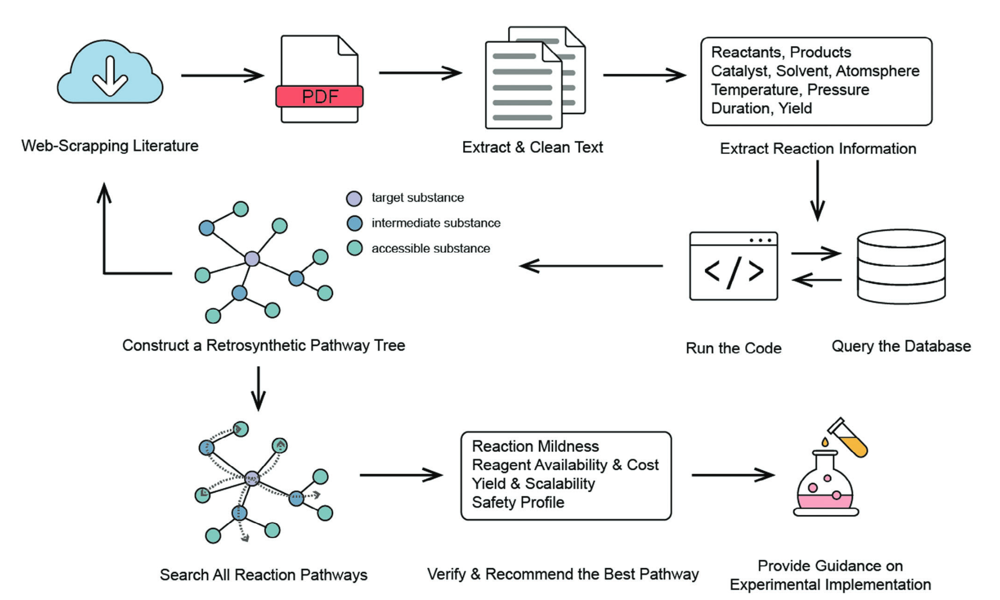
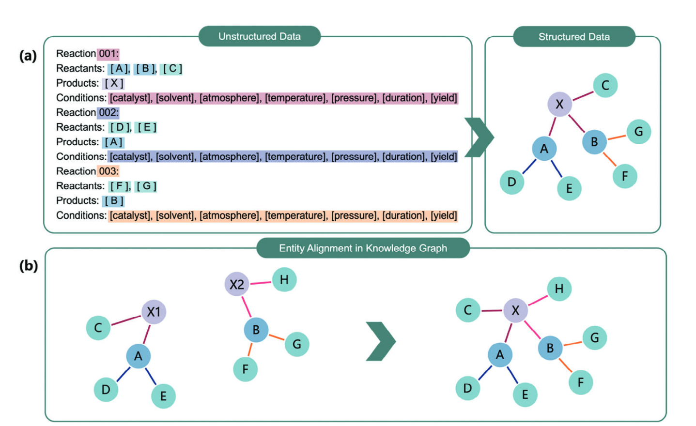
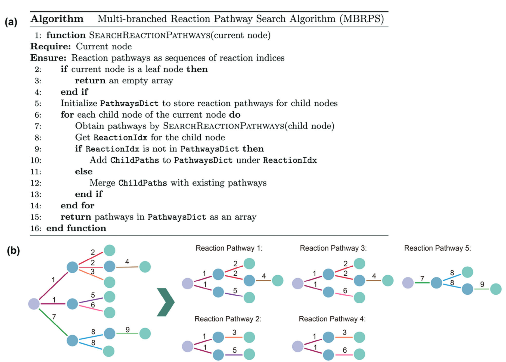
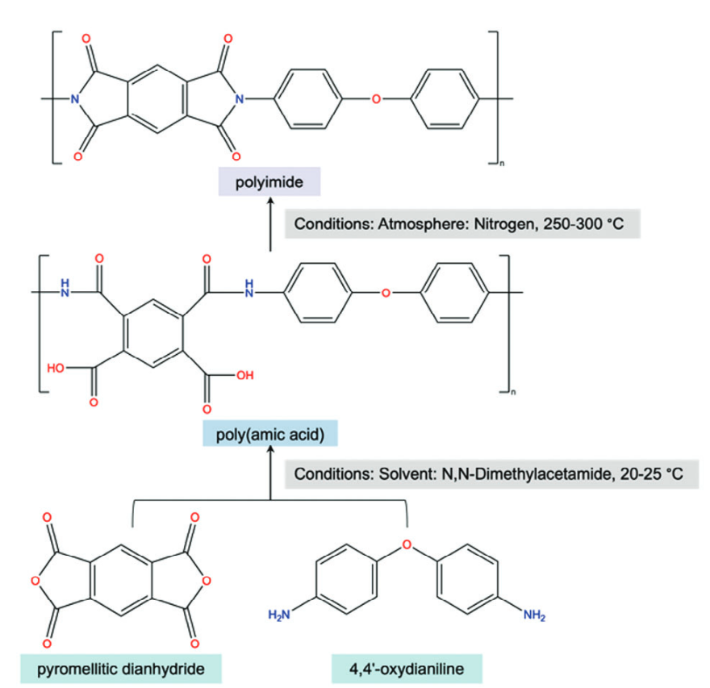
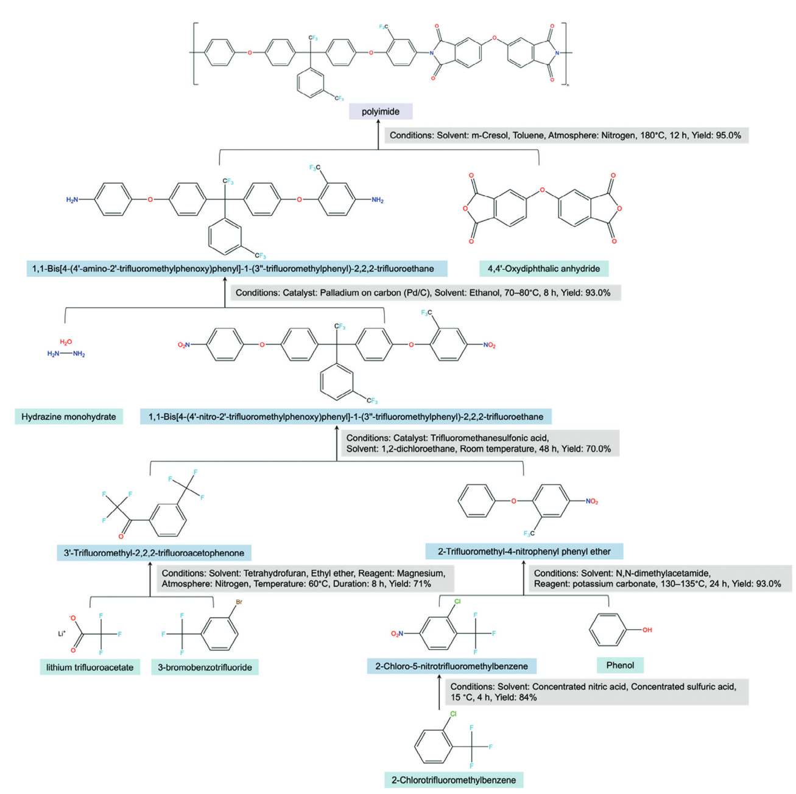

在材料化学领域，找到合适的合成路径一直是科研人员面临的重大挑战。特别是对于聚合物等大分子材料，其合成路径的设计往往需要研究人员阅读大量文献、进行繁琐的实验验证，耗时费力。复旦大学在2024年的研究提出了一种结合大语言模型和知识图谱的自动化逆合成规划代理系统。
摘要：识别材料化学中可靠的合成途径是一项复杂的任务，特别是在聚合物科学中，因为大分子的命名复杂且往往不独特。为了应对这一挑战，提出了一种集成大型语言模型（LLM）和知识图的代理系统。通过利用LLM提取和识别化学物质名称的强大功能，并将提取的数据存储在结构化知识图中，该系统完全自动化了相关文献的检索、反应数据的提取、数据库查询、逆向合成途径树的构建，通过检索其他文献和推荐最佳反应途径进一步扩展。通过考虑化学反应物之间复杂的相互依赖性，提出了一种新的多分支反应途径搜索算法（MBRPS），以帮助识别当单个产物分解为多个反应中间体时出现的所有有效的多分支的反应途径。相比之下，之前的研究仅限于产品分解成最多一种反应中间体的情况。这项工作代表了首次尝试开发一种专为LLM驱动的大分子量身定制的全自动逆转录合成计划试剂。应用于聚酰亚胺合成，新方法构建了一个包含数百条途径的逆转录合成途径树，并推荐了优化的途径，包括已知和新途径。
逆合成规划：材料发现的关键一环
逆合成规划在化学研究中扮演着核心角色，它通过系统地将复杂分子分解为更简单的前体，最后使用市售的起始化合物制定合成计划。通过系统地评估潜在的化学转化，逆转录合成使研究人员能够探索广泛的合成可能性，并选择最有效的途径。这种方法不仅直接应用于有机合成，还对加速材料发现、优化化学生产工艺以及推动多学科创新研究起着关键作用。
然而，传统的基于规则或专家的计算机辅助合成方法存在明显局限性，如高人力成本和有限的搜索空间。但是，深度学习推动的重大突破彻底改变了逆向合成。使用深度学习的单步逆向合成涉及根据给定产物确定反应物主要基于如下方法：
- 基于模板的方法：依赖于预定义的反应模板以获得高精度，但适用性有限
- 基于无模板的方法：提供了更大的灵活性，但往往牺牲了精度
然而，这些方法主要关注将目标化合物分解为一个中间体和多个起始化合物，而更复杂的多中间体路径尚未得到充分探索。更重要的是，这些已有的研究主要集中在小分子上，对聚合物和蛋白质等大分子的关注有限。
大分子逆合成规划的独特挑战
将逆合成规划应用于大分子面临着特殊挑战。与小分子不同，大分子往往缺乏广泛记录的反应数据库，这使得深度学习模型的预测变得棘手。此外，大分子系统中原子数量庞大，以及化学反应受复杂相互作用影响的事实，使得准确计算变得困难。
更为棘手的是，大分子如聚合物的命名十分复杂且多变。例如，广为人知的"聚苯乙烯"也可能基于结构命名为"poly(1-phenylethylene)"，或在基于来源的命名约定下被称为"poly(vinylbenzene)"和"poly(ethenylbenzene)"。这种命名的多样性使得传统基于规则的方法难以准确识别相关反应。
大语言模型与知识图谱的创新融合

使用LLM代理进行自动逆转录合成规划的示意性工作流程，包括文献检索、反应数据提取、数据库查询、逆转录合成树的扩展和构建以及最佳途径推荐。

知识图谱构建示意图。a） 提取化学反应并将非结构化数据转换为结构化格式的示意图。b） 知识图中的实体对齐，以确保文章之间的命名一致。
为解决这些挑战，研究团队提出了一种基于大语言模型和知识图谱的逆合成规划代理。这一代理能够基于给定的目标产物自动查询、下载和提取化学反应信息，构建结构化知识图谱以实现高效准确的信息检索和扩展。
该系统采用记忆型深度优先搜索(MDFS)算法，结合数据库查询，构建逆合成路径树，使用商业可得化合物作为起始物质合成目标产物。当反应路径无法进一步扩展时，代理会自动检索并整合相关文献中的额外合成数据，不断丰富知识图谱并拓展化学反应路径。

MBRPS算法的说明。a） 算法伪代码。b） 展示在逆转录合成途径树中识别多种反应途径的示例。
创新之处在于系统采用了多分支反应路径搜索(MBRPS)算法，通过考虑化学反应物之间的复杂关系，识别所有权威可行的合成路径，包括多分支路径，并基于反应条件、产率等因素推荐最优反应路径。
系统架构与工作流程
该逆合成规划代理的工作流程分为四个主要步骤：
- 自动文献检索：系统首先通过Google Scholar API检索相关论文标题，然后通过网络爬虫下载文献PDF，使用PyMuPDF提取文本并进行清洗以提高可读性。
- 知识图谱构建：系统基于ChatGPT-4o API开发，结合提示工程、上下文学习和思维链(CoT)技术执行实体和关系提取、知识图谱构建和实体对齐。它将提取的化学反应信息（包括反应物、产物、反应条件等）以标准化格式输出，并使用正则表达式将这些信息转化为结构化知识图谱。系统还会进行实体对齐，确保在不同论文中对同一物质的不同命名能够统一。
- 逆合成路径树构建与扩展：系统使用MDFS算法构建逆合成路径树，以目标产物为根节点，商业可得化合物为叶节点。构建过程遵循特定规则，并查询eMolecules和PubChem等数据库验证中间节点是否为常用物质。如果某节点无法进一步扩展到叶节点，系统会自动查询相关文献，提取额外的化学反应信息，增加到知识图谱中，从而完成反应路径。
- 化学反应路径搜索与推荐：系统采用MBRPS算法识别所有有效的化学反应路径，包括多分支路径。它考虑了"与"关系（同一反应指数的节点）和"或"关系（不同反应指数的节点），使用递归方法获取每个节点的所有反应路径。最后，系统评估所有路径，考虑反应物和催化剂的可用性和成本、反应条件的温和程度、反应产率和可扩展性以及安全性等因素，推荐最优的合成路线。
聚酰亚胺案例研究：从理论到实践
研究团队将该方法应用于聚酰亚胺这一高性能聚合物，聚酰亚胺以其卓越的热稳定性、化学抗性和机械强度而闻名，在航空航天、电子和高温应用等行业不可或缺。然而，其复杂的合成和高生产成本推动了对优化合成路线的研究。
在第一轮搜索过程中，代理系统检索了39篇关于聚酰亚胺合成方法的研究论文。当系统遇到无法扩展的中间节点时，会额外查询约5篇关于该中间体合成方法的文章。最终，系统总共处理了197篇论文（39+158篇额外论文），构建了扩展的逆合成路径树。
在路径评估与推荐阶段，系统考虑了反应条件的温和程度、反应物的可用性和成本、产率和可扩展性、安全性等因素进行初步筛选，并使用思维链(CoT)推理对通过初步筛选的每条反应路径进行全面评估。
我们提供以下两个标准用于演示目的：1）生产市售Katpon聚酰亚胺的方法。2） 初始反应物中存在苯酚。
值得注意的是，基于第二个标准得到的反应路径是通过扩展中间体合成相关文献搜索而发现的新路径之一。

试剂推荐的最佳反应途径基于标准1

试剂推荐的最佳反应途径基于标准2
深入解析核心技术创新
大分子信息提取的突破
与小分子相比，聚合物缺乏统一的命名标准。传统规则型方法难以应对这些复杂性，而大语言模型能够区分各种化学物质名称并准确提取聚合物相关信息，无需依赖预定义格式。然而，由于输入长度限制，LLMs只能确保单篇文章内的一致性。为解决跨文章不一致问题，代理系统检查知识图谱，统一重复节点，实现实体对齐。
知识图谱的结构化优势
传统的检索增强生成(RAG)技术在处理大量学术文献时存在文档检索质量差等局限性。本研究采用结构化知识图谱存储化学反应信息，而不依赖于RAG中基于向量的检索机制。知识图谱使代理系统能够准确高效地检索数据，支持通过整合最新学术论文进行动态更新，有效缓解LLMs的知识更新滞后问题。每个化学反应都与文献参考配对，解决了LLMs中的幻觉和不可验证性问题。
MBRPS算法：突破传统搜索限制
传统逆合成规划方法依赖"一对一"分解策略，即一个产物最多分解为一个反应中间体，导致主要是线性、无分支的路径。然而，现实世界的化学合成通常遵循"一对多"分解策略，形成多分支逆合成网络。研究团队提出的MBRPS算法通过递归方法遍历逆合成路径树，考虑反应物节点之间的"与"和"或"关系，能够识别所有可行的反应路径，包括复杂的多分支场景，确保不会忽略任何可行路径。
模块化架构与未来扩展性
该系统具有模块化架构，通过API接口与计算工具无缝集成，使用Google Scholar API进行文献搜索、PyMuPDF进行文本提取、RDKit进行分子结构转换等。这种基于API的灵活设计允许轻松整合额外的计算和实验工具，如用于反应可行性评估的DFT计算和用于自动验证的机器人合成平台，确保系统可适应不断发展的计算化学方法。
未来展望与思考
随着人工智能推理模型（如OpenAI的o1和DeepSeek的R1）的突破，以及知识图谱在组织信息和改进模型推理方面的关键作用，我们可以期待更精确高效的AI系统，革新药物发现和材料科学等领域。
整合这些模型到逆合成规划中可以优化合成策略，特别是结合基于约束的搜索算法，可以限制前体以满足特定目标，如可持续性、安全性或特定类别的化学结构。深度学习技术如图神经网络可用于预测可持续性评分，通过整合多样化数据集，系统可以确保更明智和负责任的前体选择。
这项研究是首次尝试开发专为大分子设计的、通过整合LLMs与知识图谱的全自动逆合成规划代理。与之前仅限于"一对一"分解策略的方法相比，该方法适用于"一对多"分解策略，这在实际化学合成分析中更为常见。
正如古希腊哲学家亚里士多德所言："整体大于部分之和"。在大分子逆合成规划中，我们不仅要关注各个反应步骤，还要理解它们如何共同构成一个有机整体。通过结合大语言模型的强大理解能力与知识图谱的结构化表示，我们不仅解决了技术挑战，更开启了化学合成领域的新视角——一个AI辅助下的智能合成时代。在这个时代，复杂的化学合成不再是少数专家的专利，而是变得更加透明、可解释和高效。这不仅改变了我们寻找合成路径的方式，也重塑了化学研究的本质。